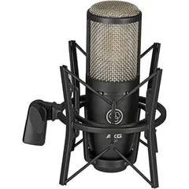
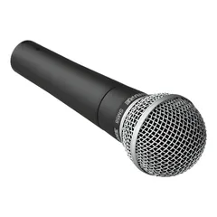
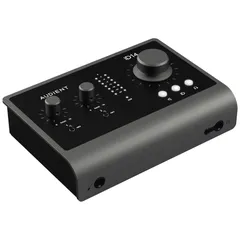
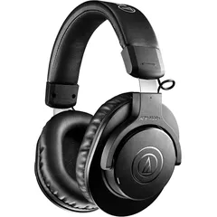
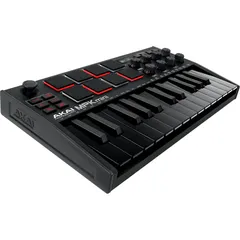

What gear do you need to record a voice?
Less than you might think, and the most important part isn’t gear at all. A mic records everything that reaches it, including your voice bouncing off walls, floors and windows. Those reflections arrive a few milliseconds after the direct sound and make a voice sound hollow and far away. Editing software can’t fully remove them, so the room comes first. A modest mic in a treated booth will beat an expensive one in a kitchen.
After the room, you need a mic, an interface, headphones and something to record on. This is what’s in the studio, and why each piece is there.
-

Main micAKG P220 large-diaphragm condenser
Most voice over, audiobooks and vocals in the booth go through the P220. As a condenser, it picks up the small things that make a voice sound close, like breath and the tail of a quiet word. That sensitivity also means it hears the room, which is why it lives in a treated booth.
The mic itself adds very little hiss: its self-noise is 16 dB(A). On a quiet take, you will hear the room long before you hear the mic. It can take 135 dB of sound pressure before it distorts, which covers almost any singer. For the ones who really let go, a −20 dB pad raises that to 155 dB. A bass-cut switch tidies up a voice that gets boomy up close. AKG, founded in Vienna in 1947, designed it for home and project studios. It needs 48-volt phantom power, which the interface supplies.
-

Second micShure SM58 dynamic
If you have ever sung into a mic at a gig, it was probably one of these. Shure has made the SM58 since 1966 and says it has shipped well over a million. You will find it on stages and in rehearsal rooms all over the world. Shure counts Paul McCartney, Patti Smith, Tina Turner, Alice Cooper, Buddy Guy, Cheap Trick and Run DMC among its users. Frank Sinatra reportedly asked for his by name. It copes well with a loud voice. In the booth, it is the mic for a second podcast guest, or for a singer who is too loud for the condenser. It hears less of the room, has a pop filter built into its round grille, and needs no phantom power.
-
Second condenser
Audio-Technica AT2020
Billie Eilish’s vocals on “Ocean Eyes” were recorded on one of these, in her brother Finneas’s bedroom, in 2015. Finneas later moved her to a Neumann TLM 103, and he has called the AT2020 a great first mic for what it costs. Its 16 mm diaphragm is smaller than the P220’s, and the two mics sound noticeably different on the same voice. It also hisses a little more (20 dB(A) self-noise against the P220’s 16), which you are unlikely to notice on a normal voice. Having two condensers means two people can both record on one. You can also try the same line on each and keep whichever suits your voice. Like the P220, it needs phantom power.
-
Spare dynamics
Two Shure SV200s
These are simple, sturdy dynamic vocal mics from Shure’s budget range. Like the SM58, they pick up mostly what is right in front of them and need no phantom power. They also have an on/off switch, which is handy when someone wants to cough or chat between takes. Use one when a guest prefers a dynamic mic, or give a second singer their own mic to warm up on.
-

InterfaceAudient iD14
This is the box that joins the mics to your laptop over USB. It powers the condenser, lifts the mic’s tiny signal to a level your software can use, and turns it into digital audio.
Its preamps share their circuit design with Audient’s ASP8024, a large mixing console found in professional studios. It records at up to 96 kHz, 24-bit, which is twice the sample rate most voice clients ask for. Resolution will never be the reason a file comes back. Two mic inputs mean two people can each have their own track, and you can listen to yourself through it with no delay. That matters more than it sounds: hearing your own voice even a tenth of a second late makes it surprisingly hard to talk normally.
-

HeadphonesAudio-Technica ATH-M20X
Closed-back headphones keep the sound in your ears and away from the mic. Open-backs leak, and a sensitive condenser will happily record that leak as a faint ghost of your backing track. The M20X is the entry model in Audio-Technica’s M-series, the same range as the M50x you have probably seen around plenty of studio necks. Reviewers describe its sound as neutral for a closed-back. That is what you want while recording, because you hear your voice as it is, without extra bass flattering it. It is also light, which you will appreciate two hours into an audiobook.
-

KeysAkai MPK Mini MK3
You won’t need it for voice work. It’s there for songwriters and producers who want to sketch a melody or a beat between takes. Akai calls the MPK Mini the best-selling USB MIDI keyboard in the world. The appeal is easy to see: 25 small keys, eight drum pads and eight knobs in something smaller than a laptop. This is the 2020 MK3 version, and it plugs into most recording software without any drivers.
-
In the booth
Yamaha digital piano
A beginner Yamaha digital piano sits on a stand inside the booth. Its full-size keys have a bit of piano feel, though they aren’t fully weighted like an acoustic piano’s. Singers can use it to find a starting note or play along while they warm up. It helps with harmonies too: play the part a few times, then sing it.
-
On the producer desk
Blue Yeti USB mic
The Yeti plugs straight into a computer by USB, with no interface needed. That makes it the quickest way to catch an idea before it disappears. Billie Eilish and Finneas used one while demoing songs. It has three capsules and four pickup patterns, including one for two people facing each other across a table. It records at 48 kHz, 16-bit. That is fine for demos, scratch vocals and notes to yourself. For a final take, use the P220 or AT2020 through the iD14, which records at 24-bit.
-
The small things
Pop filter, shock mount and stands
The pop filter is a fine mesh between your mouth and the mic. It breaks up the burst of air from P and B sounds, which would otherwise hit the mic as a thump. The shock mount holds the mic in elastic, so a tapped desk or a shuffle of feet doesn’t travel up the stand.
-
What you bring
Your laptop and recording software
Bring a laptop with the recording software (DAW) you like: Reaper, Logic, Audacity, Pro Tools and Adobe Audition all work with the iD14. If you’d rather not run the software yourself, say so when you book and I’ll set up a simple recording for you.
There are more mics than inputs. The iD14 records two mics at a time, so pick the pair that suits the session. For example, use the P220 and AT2020 for two narrators, or the P220 and an SM58 for a podcast host and a guest.
How does the booth compare with what clients ask for?
Most clients and platforms send a spec sheet, and the gear here covers the technical side of the common ones. Video and voice-over clients usually want 48 kHz, 24-bit files, and the iD14 can record at twice that sample rate. Audible’s list is longer: 44.1 kHz MP3s with background noise below −60 dB, among other things. The P220 is quiet enough that it won’t be what fails that noise test. Passing comes down to the room and how you set your levels. Loud singers are covered by the P220’s headroom, and the closed-back M20X keeps your headphone mix out of the recording.
The gear gets you a clean file. Technique is what makes it a good one, and that’s what the rest of this page is about.
Condenser or dynamic: which mic should you use?
The right choice depends on the room and the voice, and price has little to do with it. A condenser’s light diaphragm reacts to the faintest sound. In a quiet, treated room that gives you detail and warmth. In an ordinary room it also gives you the fridge, the traffic and the echo. A dynamic mic needs more sound to move its heavier coil, so quiet background noise mostly doesn’t register. You lose some detail, and you need to stay closer to the mic.
Use the condenser for
Narration, audiobooks, voice over and solo vocals: anything heard up close, often on headphones.
Use the dynamic for
Untreated rooms, very loud singers, and podcasts with two people, where each mic should hear only its own speaker.
Why do I sound different when I move closer?
Most mics add bass as you get closer. This is called the proximity effect. About a hand’s width away gives a full, warm voice. A few centimetres nearer or further changes the tone enough to hear. That is why voice actors keep the same distance, and why editors notice when you don’t.
Which settings and file formats should you use?
Sample rate and bit depth
Unless your client asks for something else, record at 48 kHz, 24-bit. 48 kHz is the standard for video, and most voice clients accept it. 24-bit matters for a different reason. It lets you set your levels well below the top of the meter without adding hiss, which leaves room for a sudden laugh or a raised voice. It can’t rescue a take that clips. Once a peak hits the top of the meter, the distortion is in the file.
What do clients and platforms ask for?
These are the usual requirements. A client’s own spec sheet always wins.
| Job | Usual delivery |
|---|---|
| Voice over, e-learning, video | WAV, 48 kHz, 24-bit. Usually one file per script or per line, named the way the client asks. |
| Audiobooks for Audible (ACX) | MP3 at 192 kbps or higher, constant bit rate, 44.1 kHz. Loudness between −23 and −18 dB RMS, peaks no higher than −3 dB, background noise below −60 dB. Half a second to one second of room tone at the start of each file, and one to five seconds at the end. |
| Podcasts | MP3 or AAC at about −16 LUFS loudness, with peaks below −1 dB. Record at 48 kHz, 24-bit and convert at the end. |
| Music demos | WAV at 24-bit, at the sample rate the producer works in (usually 44.1 or 48 kHz). |
How should you prepare for a session?
Ten minutes of preparation the day before saves a lot of studio time.
Get the spec from your client first
Ask for the file format, sample rate, file names and any loudness target before you book. Knowing them on the day lets you set up the project correctly from the start. You won’t need to convert or rename files afterwards. The table above lists what most clients and platforms expect.
Set up your laptop at home
Charge your laptop, bring the charger and install any updates the night before. An update that starts mid-session can eat half an hour. Create an empty project at the right sample rate, and check you have a free USB port for the interface, or bring an adapter.
Prepare the script
Read it aloud at least once. Mark the words you trip over and check how to pronounce names, places and brand names with the client. Bring the script on a tablet with its sound off, or printed on loose single-sided pages: stapled pages rustle when you turn them.
Look after your voice
Water you drink doesn’t touch your vocal folds. It reaches them through your body over several hours, so drink plenty the day before. On the day, keep a bottle nearby and sip between takes to stop your mouth drying out and clicking.
Wear quiet clothes
A sensitive mic picks up rustling jackets, jingling bracelets and squeaky shoes. Soft cotton and bare wrists are the safest choice.
Plan where your files go
Your recordings are saved on your own laptop. Bring a USB stick or have a cloud folder ready, so you can copy the session to a second place before you leave.
First time in a booth? Say so when you book. Setup help and a basic edit are part of the hour. There’s parking on the property, and coffee and tea are on hand.
How do you get a clean take?
Most problems that take an hour to fix in the edit take a minute to prevent in the booth.
Set your levels with your loudest line
Read the loudest part of the script and adjust the input gain until it peaks between about −12 dB and −6 dB. Setting levels on a quiet line is the usual mistake: the first laugh or shout then distorts. Setting them too low causes the opposite problem, because raising a quiet recording later raises its hiss too.
Keep the same distance
Your level and tone change as you move. Find a comfortable spot about a hand’s width from the pop filter and stay there. If a project runs over several sessions, note the distance and the gain setting so the next session sounds the same.
Speak slightly across the mic
Angle the mic a little, or speak just past it. The burst of air from P and B sounds then sails past the mic. Together with the pop filter, this stops most thumps.
Listen on headphones while you record
You’ll hear a rustled page, a creaking chair or a stomach rumble while you can still redo the line.
Record ten seconds of room tone
At the start or end of the session, record the room with nobody speaking. Every room has its own faint sound, and that is what you are capturing. Editors use it to fill gaps between edits so they don’t drop into dead silence, and noise-reduction tools use it to learn what to remove.
What changes for each type of recording?
Voice over
Stand if you can. Your lungs have more room, so long lines are easier to hold. Read the whole script aloud once before you record, to find the tricky words and decide where the emphasis goes.
Podcasts
Give each person their own mic and their own track, so you can fix one voice without affecting the other. The booth’s two inputs allow this. Match the levels before you start, and agree on a signal for “let’s redo that” so nobody talks over a fluffed line.
Audiobooks
Narration is a long-distance event. When you stumble, pause and pick up from the start of the sentence. There’s no need to redo the whole page. Keep your distance and tone the same across chapters recorded days apart, and take a short break every hour. Half-day and full-day blocks are easy to arrange, and audiobooks in a South African language are half price.
Vocals and demos
Record a rough guide vocal early, so a producer has something to build on. Don’t chase one perfect take: combining the best lines from three good ones is normal. If you sing loudly, try the P220’s pad or the SM58.
Self tapes and auditions
Say your name, the role and the take number at the start of each file, so nothing gets mixed up later. Keep the sound clean and simple. Casting directors are listening for the performance, and heavy processing won’t change their minds.
Narration for video
Record your voice on its own, without music. A clean voice track is far easier to mix under music or move to fit the picture later.
What should you check before you send your files?
Clients reject files for small, avoidable reasons more often than for the performance. Run through this list before you send anything.
- Listen to the whole recording once on headphones at a normal volume, and mark any clicks, bumps or background noises to fix.
- Remove distracting noises such as loud breaths, mouth clicks and page turns. Leave quiet natural breaths in: a voice without them sounds odd.
- Trim the start and end of each file, leaving any room tone the client asks for. For Audible, that is half a second to one second at the start and one to five seconds at the end.
- Check the levels. Peaks should stay below the client’s limit: −3 dB for Audible, about −1 dB for podcasts. Match the loudness target if there is one.
- Export in the format asked for: file type, sample rate and bit depth. See the delivery table.
- Name the files exactly as asked. Number them with leading zeros, such as 01, 02 and 03, so they sort in the right order.
- Play back the exported files themselves, start to finish. Exports sometimes cut off the last word or come out at the wrong sample rate.
- Send a short note with the files, listing what is included and any lines you recorded in more than one way.
- Keep the project and raw recordings until the client signs off, in case they ask for changes or pickups.
Why does my recording sound wrong?
| What you hear | Usual cause | Fix |
|---|---|---|
| Thumps on P and B sounds | Air hitting the mic | Use the pop filter and speak slightly across the mic. |
| A hollow, echoey sound | Sound bouncing off hard surfaces | Move away from walls and corners, and add soft furnishings. At home, a cupboard full of clothes makes a good booth. |
| Hiss under everything | Levels set too low and raised later | Set levels with your loudest line, then record again. |
| Crackle or distortion on loud parts | Gain set too high, so peaks clip | Turn the gain down and record again. Clipping can’t be fixed afterwards. |
| A constant hum or buzz | Electrical interference | Try another plug point, unplug nearby chargers, and move away from fluorescent lights and fridges. |
| Volume that changes between takes | Your distance from the mic changed | Keep to one spot. Mark it on the floor with tape. |
| Clicks and smacks | A dry mouth | Sip room-temperature water, eat a slice of apple before a long session, and take regular breaks. |
| Faint music or voice in the background | Sound leaking from the headphones | Turn the headphones down and check they seal. Glasses and thick hair can break the seal. |
Recording terms
- DAW
- Digital audio workstation: the software you record and edit in, such as Reaper, Logic, Audacity or Pro Tools.
- Phantom power
- 48 volts sent from the interface down the mic cable. Most condenser mics need it.
- Gain
- How much the interface boosts the mic’s signal. Setting it well is called gain staging.
- Clipping
- Distortion when a signal goes past the top of the meter, which can’t be fixed afterwards.
- Sample rate
- How many times a second the sound is measured, such as 48 kHz.
- Bit depth
- How finely each measurement is recorded. 24-bit leaves room to record at safe levels without hiss.
- Latency
- The delay between making a sound and hearing it in your headphones.
- Proximity effect
- The extra bass most mics add as you move closer.
- Plosive
- The burst of air from P and B sounds that thumps into a mic.
- Room tone
- A recording of the room with nobody speaking, used to fill gaps in an edit.
- LUFS
- A measure of how loud audio sounds to people, used for podcast and streaming targets.
Rather record in a treated booth?
Didi’s House is in Kensington B, Randburg. The booth and all the gear on this page cost R700 an hour, or R350 for audiobooks in a South African language. Bring your laptop; everything else is set up when you arrive.